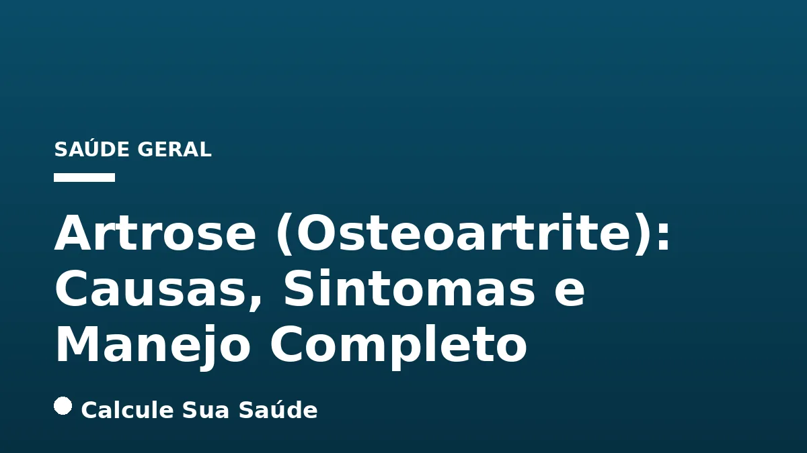

Aviso médico importante
Este conteúdo é educativo e informativo e não substitui a consulta, o diagnóstico ou o tratamento de um profissional de saúde. Em caso de sintomas, procure orientação médica.
Índice do Artigo
- 1. O Que é Artrose (Osteoartrite)? Entendendo a Condição Degenerativa
- 2. Epidemiologia da Artrose no Brasil e no Mundo: Um Desafio de Saúde Pública
- 3. Causas e Fatores de Risco da Artrose: Uma Perspectiva Multifatorial
- 4. Sintomas Detalhados da Artrose: Reconhecendo os Sinais
- 5. Diagnóstico da Artrose: Abordagem Clínica e por Imagem
- 6. Prevenção da Artrose: Estratégias Baseadas em Evidências
- 7. Tratamento Não Farmacológico da Artrose: Pilar Fundamental do Manejo
- 8. Tratamento Farmacológico da Artrose: Opções para Alívio da Dor e Inflamação
- 9. Tratamentos Cirúrgicos para Artrose Avançada: Quando a Intervenção se Faz Necessária
- 10. Mitos e Verdades sobre a Artrose: Esclarecendo Dúvidas Comuns
- 11. Qualidade de Vida e Manejo a Longo Prazo com Artrose
- 12. Conclusão: Viver Bem com Artrose é Possível com Conhecimento e Cuidado
- 13. Perguntas frequentes
A artrose, cientificamente conhecida como osteoartrite ou osteoartrose, representa a doença reumática mais prevalente e uma das principais causas de dor crônica e incapacidade em adultos. Caracterizada pela degeneração progressiva da cartilagem articular – o tecido elástico que reveste as extremidades dos ossos e permite o movimento suave das articulações – esta condição afeta não apenas a cartilagem, mas toda a estrutura articular, incluindo ossos, ligamentos e a membrana sinovial.
Com o avanço da doença, podem surgir alterações ósseas notáveis, como a formação de osteófitos, popularmente chamados de 'bicos de papagaio', que contribuem para a limitação funcional e a dor. Compreender a artrose em sua totalidade – desde suas causas multifatoriais até as opções de manejo mais eficazes – é crucial para pacientes, cuidadores e profissionais de saúde. Este artigo aprofundará os aspectos científicos da artrose, desmistificando conceitos e apresentando as abordagens terapêuticas baseadas em evidências.
É fundamental ressaltar que as informações aqui apresentadas têm caráter educativo e não substituem a consulta e o acompanhamento de um profissional de saúde qualificado. O diagnóstico e o plano de tratamento individualizado devem ser sempre estabelecidos por um médico.
Em resumo
- A artrose é uma doença degenerativa crônica que afeta a cartilagem e toda a articulação, sendo a doença reumática mais comum.
- Fatores como idade avançada, obesidade, lesões articulares prévias e predisposição genética são os principais contribuintes para seu desenvolvimento.
- Os sintomas incluem dor, rigidez matinal (geralmente inferior a 30 minutos), inchaço, crepitação e perda de função articular.
- O diagnóstico é clínico e radiológico, com radiografias sendo essenciais para identificar o estreitamento do espaço articular e osteófitos.
- Não há cura definitiva, mas o manejo visa controlar a dor, melhorar a função e retardar a progressão da doença através de abordagens não farmacológicas, farmacológicas e, em casos avançados, cirúrgicas.
- A prevenção e o tratamento precoce, incluindo a manutenção de um peso saudável e a prática de atividade física regular, são cruciais para a qualidade de vida.
1. O Que é Artrose (Osteoartrite)? Entendendo a Condição Degenerativa
A artrose, ou osteoartrite (OA), é uma condição articular crônica e progressiva que se caracteriza primariamente pelo desgaste da cartilagem articular. Esta cartilagem, um tecido conjuntivo elástico e resistente, é vital para absorver impactos e permitir o deslizamento suave entre as superfícies ósseas nas articulações. Quando a cartilagem se deteriora, os ossos começam a friccionar-se diretamente, levando a dor, inflamação e limitação de movimento.
Além da cartilagem, a artrose afeta toda a articulação, incluindo o osso subcondral, os ligamentos, a cápsula articular e a membrana sinovial. O osso subcondral pode reagir ao estresse excessivo com a formação de osteófitos (bicos de papagaio) e esclerose. A inflamação da membrana sinovial (sinovite) também pode ocorrer, contribuindo para a dor e o inchaço. A complexidade da artrose reside no fato de não ser apenas um problema de 'desgaste', mas uma doença ativa que envolve processos biológicos de degradação e reparo falho.
Classificação da Artrose
A osteoartrite pode ser classificada em dois tipos principais:
- Artrose Primária (Idiopática): É a forma mais comum, onde a causa específica do desgaste da cartilagem não é identificada. Geralmente, está associada ao envelhecimento e a fatores genéticos, afetando múltiplas articulações.
- Artrose Secundária: Ocorre como resultado de uma causa subjacente conhecida. Isso pode incluir lesões articulares prévias (traumas, fraturas), deformidades congênitas, doenças metabólicas (como diabetes tipo 2 ou hemocromatose), infecções articulares ou outras condições inflamatórias.
A compreensão dessa distinção é importante para o diagnóstico e para a elaboração de um plano de tratamento adequado, que pode incluir o manejo da condição subjacente na artrose secundária.
2. Epidemiologia da Artrose no Brasil e no Mundo: Um Desafio de Saúde Pública
A artrose representa um dos maiores desafios de saúde pública globalmente e no Brasil, devido à sua alta prevalência e ao impacto significativo na qualidade de vida e na capacidade funcional dos indivíduos. É, sem dúvida, a doença reumática mais frequente, correspondendo a uma parcela substancial das consultas em ambulatórios de Reumatologia.
Dados Globais e Nacionais
A Organização Mundial da Saúde (OMS) estima que cerca de 80% das pessoas com mais de 65 anos apresentam algum grau de artrose. No Brasil, a situação não é diferente. Estima-se que a artrose afete aproximadamente 15 milhões de pessoas, com o Ministério da Saúde indicando que a doença atinge cerca de 7% da população do país. Esses números tendem a crescer com o envelhecimento populacional.
A doença tem um impacto socioeconômico considerável, sendo responsável por 7,5% de todos os afastamentos do trabalho no Brasil. É a segunda doença que justifica o auxílio-inicial (7,5% do total) e o auxílio-doença em prorrogação (10,5%), além de ser a quarta causa determinante de aposentadoria, representando 6,2% dos casos. Isso demonstra a gravidade da condição em termos de perda de produtividade e sobrecarga nos sistemas de previdência e saúde.
Disparidades Regionais e de Gênero
A análise epidemiológica no Brasil também revela disparidades. A região Sudeste, por exemplo, concentrou a maioria das internações por artrose em idosos nos últimos anos, refletindo possivelmente a densidade populacional e a estrutura de saúde. Além disso, há uma predominância de casos em mulheres, especialmente nas mãos e joelhos, embora a incidência se iguale entre os sexos após os 70 anos. Antes dos 40, é mais comum em homens, frequentemente associada a lesões traumáticas.
Esses dados reforçam a necessidade de estratégias eficazes de prevenção, diagnóstico precoce e manejo adequado da artrose para mitigar seu impacto na saúde individual e coletiva.
3. Causas e Fatores de Risco da Artrose: Uma Perspectiva Multifatorial
A artrose é uma doença multifatorial, o que significa que seu desenvolvimento não se deve a uma única causa, mas sim a uma interação complexa de fatores genéticos, ambientais e mecânicos. A deterioração da cartilagem articular é um processo gradual influenciado por diversos elementos.
Idade
A idade é, inegavelmente, o fator de risco mais significativo para a artrose. A doença é rara antes dos 40 anos, mas sua prevalência aumenta exponencialmente após os 60. Aos 75 anos, cerca de 85% das pessoas apresentam evidências radiológicas ou clínicas de artrose. Com o envelhecimento, a capacidade de reparo da cartilagem diminui, e anos de uso e estresse mecânico contribuem para seu desgaste.
Obesidade e Excesso de Peso
O excesso de peso corporal é um fator de risco crucial, especialmente para as articulações de carga, como joelhos e quadris. O peso extra aumenta a pressão mecânica sobre essas articulações, acelerando o desgaste da cartilagem. Além do impacto mecânico, o tecido adiposo (gordura) produz substâncias inflamatórias (adipocinas) que podem contribuir para a inflamação sistêmica e local nas articulações, agravando a doença. A redução de peso é uma das intervenções mais eficazes na prevenção e manejo da artrose, com cada quilo perdido podendo resultar em uma redução de até 4 quilos na carga sobre o joelho. Para mais informações sobre o impacto do peso na saúde, veja nosso artigo sobre Gordura Visceral: Perigos e Estratégias de Redução.
Lesões Articulares e Traumatismos
Lesões prévias nas articulações, como fraturas, rupturas de ligamentos ou meniscos, aumentam significativamente o risco de desenvolver artrose no futuro, mesmo que a lesão tenha ocorrido há muitos anos. O trauma altera a biomecânica da articulação e pode iniciar um processo degenerativo.
Estresse Repetitivo nas Articulações
Atividades que impõem estresse repetitivo e excessivo a uma articulação, seja por exigências ocupacionais (trabalhos que envolvem agachamento, levantamento de peso) ou esportivas de alto impacto, podem acelerar o desgaste da cartilagem e o desenvolvimento da artrose. No entanto, é importante distinguir o estresse excessivo da atividade física regular e moderada, que é protetora.
Hereditariedade e Deformidades Ósseas
Existe uma predisposição genética para a artrose, o que significa que ter histórico familiar da doença aumenta o risco. Além disso, pessoas que nascem com articulações malformadas ou com defeitos na cartilagem têm maior probabilidade de desenvolver artrose ao longo da vida, pois a estrutura articular não suporta as cargas de forma ideal.
Doenças Metabólicas
Certas condições metabólicas, como o diabetes tipo 2 e a hemocromatose (excesso de ferro no corpo), podem contribuir para o desenvolvimento ou agravamento da artrose. Essas doenças podem afetar a saúde da cartilagem e o metabolismo ósseo através de mecanismos inflamatórios e bioquímicos.
Sexo
A artrose apresenta diferenças na incidência entre os sexos. Em geral, é mais comum em mulheres, especialmente nas mãos e joelhos. Antes dos 40 anos, é mais frequente em homens, muitas vezes devido a lesões traumáticas. Entre 40 e 70 anos, a prevalência é maior em mulheres, e após os 70, a incidência se iguala entre os sexos.
4. Sintomas Detalhados da Artrose: Reconhecendo os Sinais
Os sintomas da artrose desenvolvem-se gradualmente e podem variar em intensidade e localização, dependendo da articulação afetada e do estágio da doença. É crucial reconhecer esses sinais para buscar diagnóstico e tratamento precoces.
Dor Articular
A dor é o sintoma mais comum e frequentemente o primeiro a ser percebido. Inicialmente, a dor pode ser intermitente e surgir apenas durante ou após a atividade física. Com a progressão da doença, a dor pode tornar-se mais persistente, ocorrendo mesmo em repouso e podendo interferir no sono. A dor da artrose é tipicamente mecânica, ou seja, piora com o movimento e melhora com o repouso. No entanto, em estágios avançados, a dor pode ser constante devido à inflamação crônica e ao dano estrutural.
Rigidez e Perda de Flexibilidade
A rigidez articular é comum, especialmente pela manhã ou após períodos de inatividade (rigidez pós-repouso). Diferente da rigidez associada a doenças inflamatórias como a artrite reumatoide, a rigidez da artrose geralmente dura menos de 30 minutos e melhora com o movimento leve. Com o tempo, a perda de flexibilidade e da amplitude de movimento da articulação pode se tornar significativa, dificultando atividades diárias simples.
Inchaço, Calor e Crepitação
Pode haver inchaço (edema) e uma sensação de calor na articulação afetada, indicando um componente inflamatório. A crepitação, que são sons de rangido, estalo ou atrito ao mover a articulação, é um sinal característico do desgaste da cartilagem, onde as superfícies ósseas irregulares se friccionam. Embora a crepitação possa ocorrer em articulações saudáveis, na artrose ela é frequentemente acompanhada de dor.
Mialgia e Deformidades
A dor muscular (mialgia) secundária pode ocorrer ao redor da articulação acometida, como resultado da tentativa do corpo de proteger a articulação ou devido a alterações na marcha e postura. Em estágios avançados, a artrose pode levar a deformidades visíveis nas articulações, como o aumento do tamanho das articulações dos dedos (nódulos de Heberden e Bouchard) ou o desalinhamento dos joelhos (joelho varo ou valgo).
As articulações mais comumente afetadas incluem as das mãos (especialmente nas bases dos polegares e nas articulações interfalângicas), joelhos, quadris, coluna vertebral (cervical e lombar) e pés (principalmente na base do dedão).
5. Diagnóstico da Artrose: Abordagem Clínica e por Imagem
O diagnóstico da artrose é um processo que combina a avaliação clínica detalhada com exames de imagem, permitindo ao médico confirmar a presença da doença, avaliar sua gravidade e descartar outras condições com sintomas semelhantes.
Avaliação Clínica
O primeiro passo é uma avaliação clínica minuciosa, que inclui:
- Anamnese (História Clínica): O médico coletará informações detalhadas sobre os sintomas do paciente, como início, duração, intensidade e fatores que agravam ou aliviam a dor, histórico de lesões, doenças preexistentes e histórico familiar.
- Exame Físico: O exame físico da articulação afetada é essencial. O médico verificará a sensibilidade ao toque, a presença de inchaço, calor, crepitação ao movimento, e avaliará a amplitude de movimento da articulação, bem como a força muscular ao redor.
Exames de Imagem
Os exames de imagem são fundamentais para visualizar as alterações estruturais nas articulações:
- Radiografias (Raio-X): São o método de imagem mais importante e frequentemente o primeiro a ser solicitado para o diagnóstico da artrose. As radiografias podem revelar sinais característicos da doença, como:
- Estreitamento do espaço articular: Indica a perda de cartilagem.
- Osteófitos: Crescimentos ósseos nas margens da articulação, conhecidos como 'bicos de papagaio'.
- Esclerose subcondral: Aumento da densidade óssea abaixo da cartilagem.
- Cistos subcondrais: Pequenas cavidades no osso.
- Ressonância Magnética (RM): Embora não seja rotineiramente necessária para o diagnóstico inicial da artrose, a RM pode ser útil em casos complexos ou quando há suspeita de outras lesões (como meniscais ou ligamentares) que não são visíveis no raio-X. A RM oferece uma visão mais detalhada da cartilagem, ligamentos, meniscos e outras estruturas de tecidos moles.
Exames Laboratoriais
Não existe um exame de sangue específico que diagnostique a artrose. No entanto, exames laboratoriais podem ser solicitados para:
- Descartar outras condições: Exames de sangue (como fator reumatoide, anticorpos anti-CCP, velocidade de hemossedimentação - VHS, proteína C reativa - PCR) ou análise do líquido articular podem ser realizados para excluir outras causas de dor articular, como artrite reumatoide, gota, lúpus ou infecções.
- Avaliar o estado geral de saúde: Podem ser úteis para monitorar condições metabólicas associadas, como o diabetes tipo 2.
A combinação desses métodos permite um diagnóstico preciso e a formulação de um plano de tratamento individualizado.
6. Prevenção da Artrose: Estratégias Baseadas em Evidências
Embora a artrose seja uma condição degenerativa e a idade seja um fator de risco inalterável, diversas estratégias baseadas em evidências podem ajudar a prevenir seu desenvolvimento ou retardar sua progressão, melhorando a qualidade de vida. A prevenção é um pilar fundamental no manejo da saúde articular.
Manutenção de um Peso Saudável
A manutenção de um peso corporal saudável é, talvez, a estratégia preventiva mais eficaz, especialmente para a artrose que afeta as articulações de carga, como joelhos e quadris. O excesso de peso impõe uma carga mecânica significativamente maior sobre essas articulações, acelerando o desgaste da cartilagem. Estudos demonstram que a perda de peso pode reduzir significativamente a dor e a progressão da artrose no joelho. Cada quilo perdido pode resultar em uma redução de até 4 quilos na carga sobre o joelho durante atividades diárias. Adotar uma dieta mediterrânea, rica em alimentos integrais e anti-inflamatórios, pode auxiliar no controle de peso.
Atividade Física Regular e de Baixo Impacto
A atividade física regular é essencial para a saúde articular e muscular. Ao contrário do mito de que o exercício causa artrose, a prática adequada e supervisionada fortalece os músculos ao redor das articulações, melhora a estabilidade, a flexibilidade e a amplitude de movimento, além de nutrir a cartilagem através do movimento. Exercícios de baixo impacto são as melhores opções para proteger as articulações:
- Caminhada: Atividade simples e acessível.
- Ciclismo: Reduz o impacto nas articulações dos membros inferiores.
- Hidroginástica e Natação: A água reduz o peso corporal, aliviando a carga articular.
- Pilates e Tai Chi: Melhoram a força, flexibilidade, equilíbrio e consciência corporal.
- Yoga: Aumenta a flexibilidade e fortalece os músculos.
É crucial evitar o sedentarismo, mas também o excesso e a prática de exercícios com técnica inadequada, que podem, sim, lesionar as articulações.
Evitar Lesões Articulares e Estresse Repetitivo
Proteger as articulações de lesões e estresse repetitivo é vital. Isso inclui:
- Técnicas Adequadas: Aprender e aplicar técnicas corretas em esportes e atividades laborais para minimizar o impacto e a sobrecarga nas articulações.
- Equipamentos de Proteção: Usar equipamentos de proteção adequados durante a prática esportiva ou em ambientes de trabalho de risco.
- Pausas e Alternância de Tarefas: Em trabalhos que exigem movimentos repetitivos, fazer pausas regulares e alternar tarefas para evitar o estresse contínuo em uma única articulação.
Uso de Dispositivos de Assistência
Em certas situações, o uso de órteses, bengalas ou outros dispositivos de assistência pode ajudar a aliviar a carga sobre as articulações afetadas, prevenindo o agravamento da condição e proporcionando maior conforto e segurança.
7. Tratamento Não Farmacológico da Artrose: Pilar Fundamental do Manejo
O tratamento da artrose é multifacetado e, para a maioria dos pacientes, as medidas não farmacológicas constituem a base do manejo. Essas abordagens visam aliviar a dor, melhorar a função articular, reduzir a incapacidade e, consequentemente, elevar a qualidade de vida, sem os riscos associados aos medicamentos.
Fisioterapia e Exercícios Terapêuticos
A fisioterapia é um componente essencial e altamente eficaz no tratamento da artrose. Um fisioterapeuta pode desenvolver um programa de exercícios individualizado que inclui:
- Fortalecimento Muscular: Fortalecer os músculos que circundam a articulação afetada (por exemplo, quadríceps para artrose de joelho) ajuda a estabilizar a articulação, reduzir a carga sobre ela e melhorar o suporte.
- Melhora da Amplitude de Movimento: Exercícios de alongamento e mobilização ajudam a manter ou restaurar a flexibilidade articular, prevenindo a rigidez e a contratura.
- Exercícios Aeróbicos de Baixo Impacto: Atividades como caminhada leve, ciclismo, hidroginástica, pilates e tai chi são benéficas para a saúde cardiovascular, controle de peso e fortalecimento muscular sem sobrecarregar as articulações. A Sociedade Brasileira de Reumatologia enfatiza a importância de 'mexer-se' para quem tem artrose.
- Educação Postural e Biomecânica: Orientações sobre a postura correta e a forma de realizar atividades diárias para proteger as articulações.
A prática regular desses exercícios, sob orientação profissional, é crucial para o sucesso do tratamento a longo prazo.
Perda de Peso
Para indivíduos com sobrepeso ou obesidade, a perda de peso é uma das intervenções não farmacológicas mais impactantes. Conforme mencionado, reduzir o peso corporal diminui significativamente a carga mecânica sobre as articulações de carga, aliviando a dor e retardando a progressão da doença. Programas de emagrecimento que combinam dieta balanceada e exercícios são altamente recomendados.
Terapia Ocupacional e Dispositivos de Auxílio
A terapia ocupacional pode ser muito útil para ajudar os pacientes a adaptar suas atividades diárias e proteger as articulações. Terapeutas ocupacionais podem ensinar técnicas para realizar tarefas com menos estresse articular e recomendar dispositivos de auxílio, como:
- Órteses: Suportes que estabilizam e alinham as articulações, como joelheiras ou talas para as mãos.
- Bengalas, Andadores ou Muletas: Reduzem a carga sobre as articulações dos membros inferiores, melhorando a mobilidade e a segurança.
- Adaptadores para Tarefas Domésticas: Utensílios com cabos mais grossos, abridores de potes especiais, elevadores de assento sanitário, que facilitam as atividades e diminuem o esforço articular.
Essas medidas, quando combinadas, formam uma estratégia robusta para o manejo da artrose, promovendo autonomia e bem-estar.
8. Tratamento Farmacológico da Artrose: Opções para Alívio da Dor e Inflamação
Quando as medidas não farmacológicas não são suficientes para controlar a dor e os sintomas da artrose, o médico pode considerar a introdução de tratamentos farmacológicos. O objetivo é aliviar a dor, reduzir a inflamação e melhorar a função, sempre com cautela devido aos potenciais efeitos adversos.
Analgésicos
Os analgésicos são a primeira linha de tratamento farmacológico para a dor leve a moderada na artrose. O paracetamol é frequentemente recomendado devido ao seu perfil de segurança relativamente bom, especialmente em doses terapêuticas. É crucial não exceder a dose máxima diária recomendada para evitar o risco de danos hepáticos. Outros analgésicos mais potentes podem ser considerados em casos de dor mais intensa, sempre sob prescrição e acompanhamento médico rigoroso.
Anti-inflamatórios Não Esteroides (AINEs)
Os AINEs, como ibuprofeno, naproxeno ou diclofenaco, são eficazes para aliviar a dor e a inflamação. Podem ser usados por via oral ou tópica (cremes, géis). Os AINEs tópicos são frequentemente preferidos para artrose em articulações superficiais (como joelhos e mãos), pois têm menos efeitos adversos sistêmicos em comparação com os orais. No entanto, os AINEs orais devem ser usados com cautela e por períodos limitados, devido aos riscos de efeitos colaterais gastrointestinais (úlceras, sangramentos), cardiovasculares (aumento da pressão arterial, risco de eventos cardíacos) e renais, especialmente em idosos ou pacientes com comorbidades. A prescrição deve ser individualizada, considerando os riscos e benefícios.
Injeções Intra-articulares
As injeções diretamente na articulação podem proporcionar alívio localizado e são consideradas quando os tratamentos orais não são eficazes ou são contraindicados:
- Injeções de Corticosteroides: Corticosteroides, como a triancinolona ou betametasona, podem ser injetados na articulação para reduzir rapidamente a inflamação e a dor. O alívio pode durar algumas semanas a alguns meses. No entanto, o uso frequente dessas injeções não é recomendado devido ao risco de danos à cartilagem e outras complicações. Geralmente, são limitadas a 3-4 injeções por ano na mesma articulação.
- Injeções de Ácido Hialurônico (Viscossuplementação): O ácido hialurônico é um componente natural do líquido sinovial, que atua como lubrificante e amortecedor nas articulações. As injeções de ácido hialurônico visam restaurar essa lubrificação e podem aliviar a dor, especialmente no joelho. Embora alguns estudos sugiram que seu benefício pode não ser superior ao placebo, muitos pacientes relatam melhora. O efeito costuma ser mais gradual e duradouro que o dos corticosteroides.
É importante discutir com o médico a melhor opção farmacológica, considerando a gravidade da artrose, as articulações afetadas, as comorbidades e os potenciais efeitos adversos.
9. Tratamentos Cirúrgicos para Artrose Avançada: Quando a Intervenção se Faz Necessária
Em casos de artrose grave, quando os tratamentos conservadores (não farmacológicos e farmacológicos) não proporcionam alívio adequado da dor ou quando a função articular está severamente comprometida, as opções cirúrgicas podem ser consideradas. A decisão pela cirurgia é individualizada e baseada na gravidade da doença, idade do paciente, nível de atividade e expectativas.
Artroscopia
A artroscopia é uma técnica minimamente invasiva que utiliza pequenas incisões e uma câmera (artroscópio) para visualizar e operar dentro da articulação. Embora sua eficácia para a artrose avançada seja limitada e controversa, pode ser utilizada para:
- Remover Fragmentos de Cartilagem ou Osso: Fragmentos soltos dentro da articulação podem causar dor e bloqueios.
- Tratar Lesões de Menisco: Reparo ou remoção de partes danificadas do menisco, que podem contribuir para os sintomas da artrose.
- Limpeza Articular (Débridement): Remover tecido inflamado ou irregularidades na cartilagem.
É importante notar que a artroscopia geralmente não retarda a progressão da artrose e é mais indicada para tratar sintomas mecânicos específicos, e não a doença degenerativa em si.
Osteotomia
A osteotomia é uma cirurgia que envolve o corte e o realinhamento de um osso para redistribuir a carga sobre a articulação. É mais comumente realizada no joelho (osteotomia tibial ou femoral) quando a artrose afeta predominantemente um lado da articulação, visando aliviar a pressão na área danificada e transferi-la para uma parte mais saudável da cartilagem. Esta cirurgia é geralmente considerada para pacientes mais jovens e ativos com artrose moderada, na tentativa de adiar a necessidade de uma substituição articular total.
Substituição Articular (Artroplastia)
A substituição articular, ou artroplastia, é o tratamento cirúrgico mais eficaz para a artrose grave e avançada, especialmente no joelho e no quadril. Consiste na remoção das superfícies articulares danificadas e sua substituição por próteses artificiais feitas de metal, plástico (polietileno) e/ou cerâmica. As artroplastias mais comuns são:
- Artroplastia Total de Joelho: Substitui as superfícies do fêmur, tíbia e, às vezes, da patela.
- Artroplastia Total de Quadril: Substitui a cabeça do fêmur e o acetábulo (parte da bacia).
A artroplastia visa aliviar drasticamente a dor, restaurar a função e melhorar a qualidade de vida. Embora seja uma cirurgia de grande porte, as taxas de sucesso são elevadas, e as próteses modernas têm uma vida útil longa, geralmente superior a 15-20 anos. A reabilitação pós-cirúrgica com fisioterapia é fundamental para otimizar os resultados.
10. Mitos e Verdades sobre a Artrose: Esclarecendo Dúvidas Comuns
A artrose é uma condição cercada por muitos equívocos. Esclarecer esses mitos com base em evidências científicas é fundamental para um manejo adequado e para evitar informações incorretas que podem prejudicar o paciente.
| Mito Comum | O Que a Ciência Diz (Verdade) |
|---|---|
| A artrose é causada apenas pelo envelhecimento. | Embora a idade seja um fator de risco significativo, a artrose não é exclusivamente uma doença de idosos. Fatores como lesões articulares, excesso de peso, predisposição genética e certas condições médicas também contribuem, podendo afetar pessoas de diversas idades. |
| A artrose é uma doença hereditária. | Existe uma predisposição genética, mas fatores ambientais e lesões articulares desempenham um papel igualmente importante no risco de desenvolver artrose. Não é uma herança inevitável. |
| A atividade física causa artrose. | A atividade física regular e adequada, sem excessos e com acompanhamento profissional, pode realmente ajudar a prevenir a artrose, mantendo as articulações saudáveis e fortalecendo os músculos que as sustentam. O sedentarismo é mais prejudicial. |
| A corrida é prejudicial para as articulações com artrose. | A corrida, especialmente quando associada a um peso ideal e a exercícios de força e mobilidade, pode ser realizada por pessoas com artrose nas ancas, joelhos e tornozelos. Ela pode ajudar no processo de remodelação óssea e diminuir o desgaste natural da cartilagem, se feita com moderação e técnica correta. |
| A perda de peso não ajuda a aliviar a dor na artrose. | A perda de peso pode aliviar significativamente a dor na artrose, especialmente nas articulações de carga como joelhos, quadris e tornozelos, pois o excesso de peso coloca pressão adicional nessas articulações. |
| Suplementos alimentares podem curar a artrose. | Embora alguns suplementos (como glucosamina e condroitina) possam teoricamente auxiliar no processo de desgaste natural da cartilagem, nenhum suplemento pode curar a artrose ou reverter o dano já existente. Seus benefícios são frequentemente modestos e não universais. |
| A artrose tem cura. | Atualmente, a artrose não tem cura definitiva. Os tratamentos visam controlar os sintomas, retardar a progressão da doença e melhorar a qualidade de vida do paciente. |
| Artrite e artrose são a mesma coisa. | Artrite é um termo genérico que se refere à inflamação de uma articulação. Artrose (osteoartrite) é uma condição degenerativa caracterizada pelo desgaste da cartilagem. Embora a osteoartrite possa envolver um componente inflamatório de baixo grau, são condições distintas. |
11. Qualidade de Vida e Manejo a Longo Prazo com Artrose
Viver com artrose é um desafio contínuo, mas o manejo eficaz da doença pode melhorar significativamente a qualidade de vida. O objetivo não é apenas aliviar a dor, mas também manter a funcionalidade, a independência e o bem-estar emocional do paciente a longo prazo.
Abordagem Multidisciplinar
O manejo da artrose é mais eficaz quando abordado por uma equipe multidisciplinar. Isso pode incluir reumatologistas, ortopedistas, fisioterapeutas, terapeutas ocupacionais, nutricionistas e psicólogos. Cada profissional contribui com sua expertise para um plano de tratamento abrangente e personalizado, que considera todos os aspectos da vida do paciente.
Autocuidado e Educação do Paciente
A educação do paciente é um pilar fundamental. Compreender a doença, seus fatores de risco e as estratégias de manejo capacita o indivíduo a participar ativamente de seu tratamento. O autocuidado inclui a adesão aos exercícios, o controle do peso, a proteção das articulações e o uso correto dos medicamentos. Grupos de apoio e programas educativos podem fornecer informações valiosas e suporte emocional.
Manejo da Dor Crônica
A dor crônica associada à artrose pode ter um impacto profundo na saúde mental e emocional. Estratégias de manejo da dor que vão além dos medicamentos, como técnicas de relaxamento, mindfulness, acupuntura e terapia cognitivo-comportamental, podem ser muito úteis. O tratamento da dor deve ser contínuo e adaptado às necessidades do paciente.
Adaptações no Estilo de Vida
Pequenas adaptações no dia a dia podem fazer uma grande diferença. Isso pode incluir o uso de calçados adequados, a adaptação do ambiente doméstico para facilitar a mobilidade (barras de apoio, rampas), e a escolha de atividades de lazer que sejam gentis com as articulações. A continuidade da atividade física, mesmo que adaptada, é crucial para manter a força e a flexibilidade. Para dores na coluna, por exemplo, é importante considerar o manejo adequado, como em nosso artigo sobre Dor Lombar: Causas, Sinais de Alerta e Alívio Baseado em Evidências.
O acompanhamento médico regular é essencial para monitorar a progressão da doença, ajustar o plano de tratamento conforme necessário e abordar quaisquer novas preocupações. Com um manejo proativo e um compromisso com o autocuidado, é possível viver uma vida plena e ativa com artrose.
12. Conclusão: Viver Bem com Artrose é Possível com Conhecimento e Cuidado
A artrose, ou osteoartrite, é uma condição crônica e degenerativa que afeta milhões de pessoas globalmente, caracterizada pelo desgaste da cartilagem articular e o comprometimento de toda a estrutura da articulação. Embora não haja uma cura definitiva, o avanço da medicina e a compreensão aprofundada de suas causas, sintomas e mecanismos permitiram o desenvolvimento de estratégias eficazes para seu manejo.
Desde a prevenção, com a manutenção de um peso saudável e a prática de exercícios de baixo impacto, até as abordagens terapêuticas que incluem fisioterapia, medicamentos e, em casos avançados, intervenções cirúrgicas, o objetivo primordial é controlar a dor, preservar a função articular e, acima de tudo, melhorar a qualidade de vida do paciente. É um caminho que exige comprometimento, informação e uma parceria sólida com a equipe de saúde.
Desmistificar a artrose e combater informações incorretas é tão importante quanto o tratamento em si. A atividade física adequada, por exemplo, é uma aliada, e não uma inimiga, da saúde articular. A perda de peso é uma das intervenções mais impactantes. Com um diagnóstico precoce, um plano de tratamento individualizado e a adesão às recomendações médicas, é plenamente possível viver bem e com dignidade, minimizando o impacto da artrose no dia a dia.
Lembre-se: este artigo é um recurso informativo. Para um diagnóstico preciso e um plano de tratamento personalizado, consulte sempre um profissional de saúde qualificado.
13. Perguntas frequentes
A artrose tem cura?
Atualmente, a artrose não tem cura definitiva. Os tratamentos visam controlar os sintomas, retardar a progressão da doença, aliviar a dor e melhorar a função articular para que o paciente tenha uma melhor qualidade de vida.
Qual a diferença entre artrite e artrose?
Artrite é um termo genérico que significa inflamação de uma articulação. Artrose (osteoartrite) é um tipo específico de artrite, caracterizado principalmente pelo desgaste da cartilagem articular, embora possa haver um componente inflamatório de baixo grau.
A artrose é uma doença de idosos?
Embora a idade seja o principal fator de risco e a prevalência aumente com o envelhecimento, a artrose não afeta exclusivamente idosos. Fatores como lesões, obesidade e predisposição genética podem levar ao seu desenvolvimento em pessoas mais jovens.
Exercícios físicos podem piorar a artrose?
Não, a atividade física regular e adequada, especialmente de baixo impacto e sob orientação profissional, é benéfica. Ela fortalece os músculos que dão suporte às articulações, melhora a flexibilidade e ajuda a controlar o peso, o que pode prevenir ou retardar a progressão da artrose.
A perda de peso realmente ajuda quem tem artrose?
Sim, a perda de peso é uma das intervenções mais eficazes, especialmente para artrose em articulações de carga como joelhos e quadris. Reduzir o peso diminui a pressão sobre essas articulações, aliviando a dor e diminuindo o desgaste da cartilagem.
Quais são os principais sintomas da artrose?
Os principais sintomas incluem dor articular (que piora com o movimento e melhora com o repouso), rigidez matinal (geralmente com duração inferior a 30 minutos), inchaço, sensação de calor, crepitação (rangidos ou estalos) e perda de flexibilidade na articulação afetada.
Existem exames de sangue para diagnosticar a artrose?
Não há um exame de sangue específico para diagnosticar a artrose. O diagnóstico é feito com base na avaliação clínica e em exames de imagem, principalmente radiografias. Exames de sangue podem ser usados para descartar outras condições.
Quando a cirurgia é indicada para a artrose?
A cirurgia é considerada em casos de artrose grave, quando os tratamentos conservadores (medidas não farmacológicas e medicamentos) não conseguem aliviar a dor ou quando a função articular está severamente comprometida, impactando significativamente a qualidade de vida do paciente.
Leia também
Referências e Fontes
1. Sociedade Brasileira de Reumatologia. Osteoartrite (Artrose). Disponível em: reumatologia.org.br
2. Clínica Dr. Hong Jin Pai. Osteoartrose (osteoartrite): Mitos e Verdades. Disponível em: drhong.com.br
3. Nuno Loureiro | Medicina Desportiva. Mitos e verdades sobre a artrose: esclarecimento sobre informações incorretas ou exageradas relacionadas à doença. Disponível em: nunoloureiro.pt
4. Sociedade Brasileira de Reumatologia. Osteoartrite (artrose): mexa-se! Disponível em: reumatologia.org.br
5. Mayo Clinic. Osteoarthritis - Symptoms & causes. Disponível em: mayoclinic.org
6. Hcor Explica. Artrose: mitos e verdades sobre a doença. Disponível em: hcor.com.br
7. TV Doutor. Artrose acomete cerca de 15 milhões de brasileiros e 80% da população mundial acima dos 65. Disponível em: tvdoutor.com.br
8. MSD Manuals. Osteoartrite (OA). Disponível em: msdmanuals.com